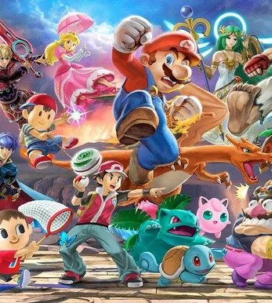
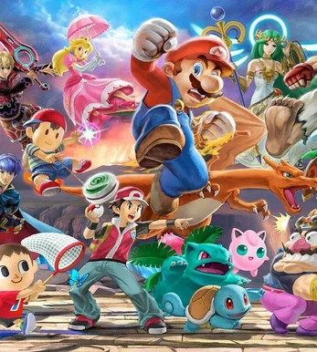

Royaume Champignon
Nous, on a pas peur des koopas !
Royaume Champignon
Nous, on a pas peur des koopas !
 

Le tournoi se déroule tous les mercredis. Le Champi Bonus peut se faire de différente façon, il ne possède pas de règle fixe, ni de seeding. Cela peut se faire en round Robin, full random, qu'avec les seconds et bien d'autres façons !
Le tournoi se déroule tous les samedis. Cette série est la série la plus sérieuse, les règles sont cadrées et au plus près des règles des tournois légaux. Une altitude sérieuse sera donc exigée.
Le tournoi se déroule tous les samedis. Cette série est la série la plus sérieuse, les règles sont cadrées et au plus près des règles des tournois légaux. Une altitude sérieuse sera donc exigée.
En savoir plus En savoir plus En savoir plus
La Team RC est la principale du Royaume, elle est plus stricte que la Junior. Plus compétitive pour être exacte. Donc, le niveau est assez élevé et l'activité également. Des Crew Battle pourront être organisées contrairement à la JRC. Le but sera de gagner en prospérités pour devenir l'une des meilleures Teams !
La Team JRC est une déclinaison de la RC, mais elle est moins compétitive, ce qui implique un niveau d'exigence plus bas. Nous avons pour objectif de vous faire découvrir l'expérience d'une équipe et de développer votre niveau, car c'est notre objectif!
Nous avons agrandi notre influence via les réseaux, où nous essayons d'être actifs et de partager à notre communauté. Les organisations sont les Toads qui gèrent ces comptes. Nous partageons les graphes de nos tournois en mentionnant le top 8 quand nous avons les noms. Nous faisons nos pubs des événements que nous pouvons organiser.
Et en prime, nous avons la chaîne de l'admin, Toad_Ytb où nous partageons les rediffusions des tournois, des montages avec les clips du Royaume et même des fiches de mu. À noter que les rediffusions sont disponibles également sur Twitch.
La princesse du Royaume, c'est Toadstool, l'administrateur du serveur et fondateur de la RC & JRC. Et le Toadérateur c'est L'Hermite, le modérateur du serveur. Ensemble, nous allons faire notre possible pour vous aider le mieux qu'on peut et de vous inclure parmi nous
created with
Free WYSIWYG HTML Editor .